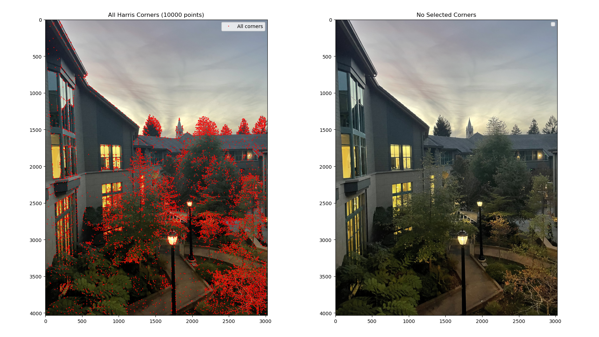
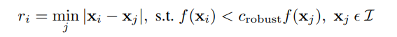
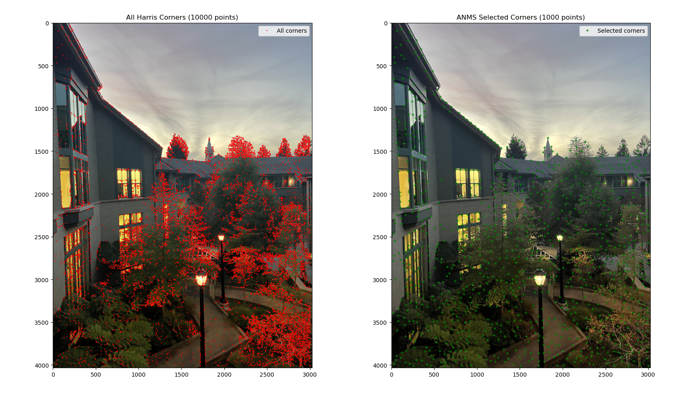
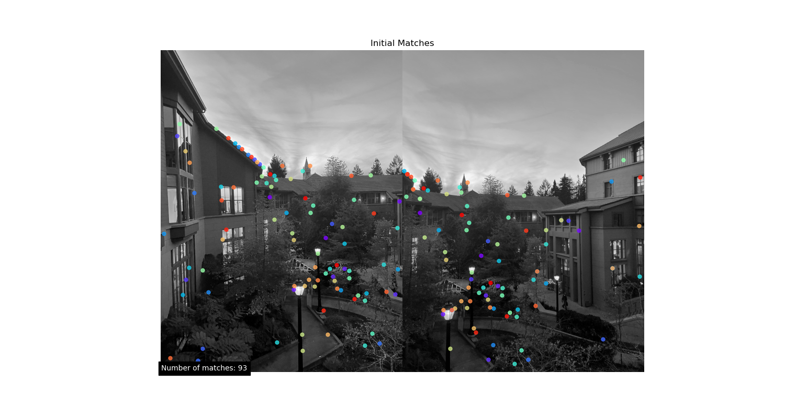

To warp images we need to find 3x3 matrix H with 8 degrees of freedom. For each corresponding pair of points (x,y) and (x', y'), we can represent them in homogeneous coordinates and get the following:
To recover the homography, we need at least four corresponding points between the two images. Each correspondence provides two equations, and with four correspondences, we get a system of 8 equations—sufficient to solve for the 8 unknowns in H. However, because such a system is sensitive to noise, using more than four correspondences is recommended. This creates an overdetermined system that can be solved with least-squares.

With the homography matrix H recovered, we can now warp an image to align it with a reference image. This is achieved using inverse warping, which ensures that every pixel in the output image receives a valid value by mapping its position back to the input image.
Image rectification is a process that uses a homography to adjust an image such that a selected object appears rectangular, correcting for perspective distortion. This is particularly useful for scenes containing paintings, posters, or tiles, where known geometric shapes can serve as reference objects.
To perform rectification, we use a single input image and define correspondences between points in the image and a desired rectangular shape. For example, if the photo contains a poster, you can manually select its four corners using a mouse-click interface and store their coordinates. Next, you define the corresponding points as the corners of a square


To create the panorama from multiple images, the following procedure was followed:
The size of the output mosaic was determined by transforming the corners of both input images using the computed homography. This allowed to predict the bounding box that would contain both images. A translation matrix was applied to ensure both images fit into the shared coordinate space of the output canvas.
This approach ensures that each pixel in the output canvas receives a value by mapping back to the original images, avoiding holes and gaps. The images were warped using: warpImage() function from the previous part.


To hide the seam i applied blending. I used laplacian stack that I implemented in project two. I got the best results when using 3 levels laplacian stack.
Even though my approach is not ideal as there are some artifacts at thebottom of the image. In general I am satisfied with the result. Here are some more examples.


In part A I manually selected corresponding points. In this part I implemented automatic detection of such points by replicating “Multi-Image Matching using Multi-Scale Oriented Patches” by Brown et al paper. The main features that are implemented are the following.
I used Harris detector. The Harris feature detector is an algorithm used in computer vision to identify corners or interest points in an image. It calculates a corner response function based on the local variations of image intensity, identifying points where there is significant change in multiple directions, making them ideal for tracking or matching between images. I limited number of points to 10 thousand.
Using Adaptive Non-Maximal Suppression (ANMS) allows for reducing the number of detected corners while ensuring that the points are evenly distributed across the image. This approach is particularly useful in maintaining spatial coverage. After experimentation, I decided to retain 1000 points as a final selection, striking a balance between computational efficiency and sufficient feature density. Below is the formula applied, as derived from the original paper, to achieve this selection and spacing of feature points.
 To effectively match feature points across images, it's essential to capture more information than a single pixel. Therefore, feature descriptors are used to encapsulate the local image characteristics around each keypoint, ensuring consistency across different views of the same scene. In this approach, a 40x40 pixel patch is extracted around each detected feature point and then downsampled to an 8x8 grayscale patch. These patches are normalized and demeaned to enhance robustness against lighting variations.

After extracting feature descriptors, I matched keypoints between image pairs using the Sum of Squared Differences (SSD) as the similarity measure. For each descriptor in the first image, SSD was calculated against all descriptors in the second image to find the closest matches. To ensure reliability, Lowe's ratio test was applied: the ratio of the smallest SSD to the second smallest SSD was computed, and only matches with a ratio below a set threshold (0.65) were retained. This approach filters out ambiguous matches, retaining only those that are distinctly better than the alternatives.
After establishing feature correspondences between images, some matches may be incorrect or outliers, which can adversely affect the accuracy of the homography matrix. To address this, I employed Random Sample Consensus (RANSAC), a robust algorithm that mitigates the influence of these outliers. The 4-point RANSAC algorithm operates as follows:
After I get homography matrix I apply warping from the part A and get the final image as a result.


The project was very interesting especially the B part. I think I should have spent more time on the blending images when stiching panoramas, because on some pictures seams at the bottom are visible. Also, adding some kind of color normalization will really make a difference, then the final image will look like panorama that the phone generates.